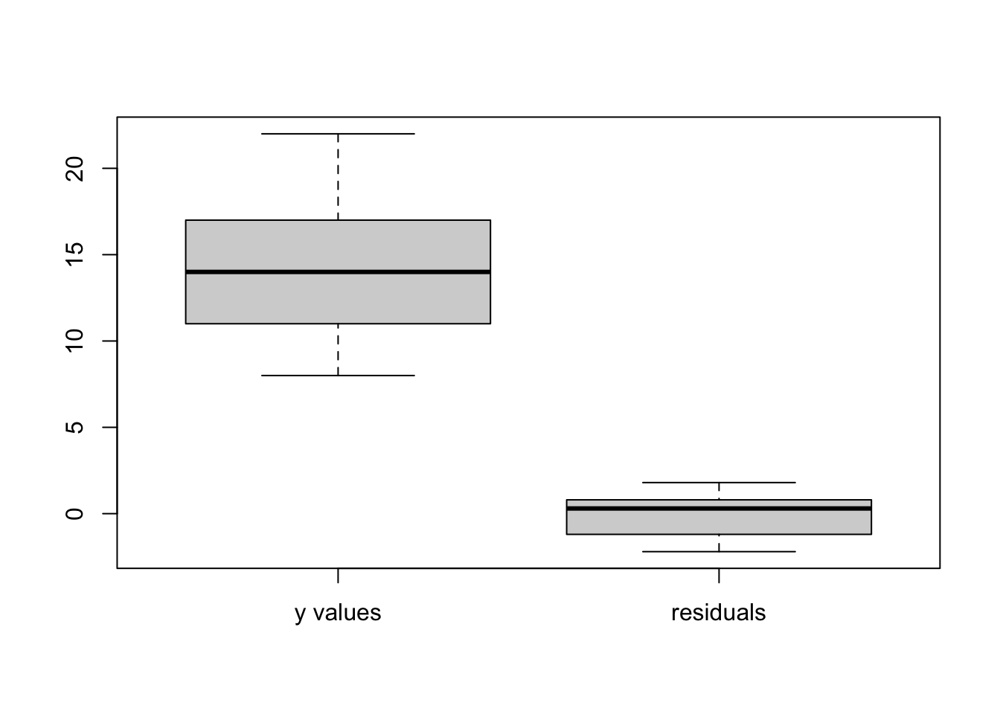

airfreight <-
tibble(
x = c(1, 0, 2, 0, 3, 1, 0, 1, 2, 0),
y = c(16, 9, 17, 12, 22, 13, 8, 15, 19, 11)
)Chapter Two HW
| i: | 1 | 2 | 3 | 4 | 5 | 6 | 7 | 8 | 9 | 10 |
|---|---|---|---|---|---|---|---|---|---|---|
| \(X_{i}\): | 1 | 0 | 2 | 0 | 3 | 1 | 0 | 1 | 2 | 0 |
| \(Y_{i}\): | 16 | 9 | 17 | 12 | 22 | 13 | 8 | 15 | 19 | 11 |
airfreight.lm <- lm(y ~ x, data = airfreight)airfreight.lm
Call:
lm(formula = y ~ x, data = airfreight)
Coefficients:
(Intercept) x
10.2 4.0 summary(airfreight.lm)
Call:
lm(formula = y ~ x, data = airfreight)
Residuals:
Min 1Q Median 3Q Max
-2.2 -1.2 0.3 0.8 1.8
Coefficients:
Estimate Std. Error t value Pr(>|t|)
(Intercept) 10.2000 0.6633 15.377 3.18e-07 ***
x 4.0000 0.4690 8.528 2.75e-05 ***
---
Signif. codes: 0 '***' 0.001 '**' 0.01 '*' 0.05 '.' 0.1 ' ' 1
Residual standard error: 1.483 on 8 degrees of freedom
Multiple R-squared: 0.9009, Adjusted R-squared: 0.8885
F-statistic: 72.73 on 1 and 8 DF, p-value: 2.749e-05Anova(airfreight.lm, type = "III")Anova Table (Type III tests)
Response: y
Sum Sq Df F value Pr(>F)
(Intercept) 520.2 1 236.454 3.178e-07 ***
x 160.0 1 72.727 2.749e-05 ***
Residuals 17.6 8
---
Signif. codes: 0 '***' 0.001 '**' 0.01 '*' 0.05 '.' 0.1 ' ' 1a. Estimate \(\beta_{1}\) with a 95 percent confidence interval. Interpret your interval estimate.
Confidence interval for slope
confint(airfreight.lm, level = 0.95) 2.5 % 97.5 %
(Intercept) 8.670370 11.729630
x 2.918388 5.081612The estimated \(\beta_{1}\) is 4.0, with a 95 percent confidence interval of 2.918388 \(\leq\) \(\beta_{1}\) \(\leq\) 5.081612.
Based on the 95 percent interval, the researcher concludes that with 95% confidence, that the number of broken ampules increases somewhere between 2.92 and 5.08 for each time a carton is transferred.
b. Conduct a \(t\) test to decide whether or not there is a linear association between number of times a carton is transferred (\(X\)) and number of broken ampules (\(Y\)). Use a level of significance of 0.05. State the alternatives, decision rule, and conclusion. What is the \(P\)-value of the test?
Critical value of \(t\)
qt(0.975, 8)[1] 2.306004p-value of t test
The p-value of t-test was calculated using the following:
pt(8.528, 8, lower.tail = FALSE)*2[1] 2.748737e-05(1 - pt(8.528, 8)) * 2[1] 2.748737e-05\(B_{0}\) represents here the mean number of ampules broken when no transfers of the shipment are made - i.e., when \(X\) = 0. Obtain a 95 percent confidence interval for \(B_{0}\) and interpret it.
A consultant has suggested, on the basis of previous experience, that the mean number of broken ampules should not exceed 9.0 when transfers are made. Conduct an appropriate test, using \(\alpha\) = 0.025. State the alternatives, decision rule, and conclusion.
Alternative hypotheses: \(H_{A}\) is \(\beta_{1} \neq 0\).
If \(|t^{*}| \leq 2.306\) conclude \(H_{0}\), otherwise \(H_{A}\)
The \(p\)-value is < 0.05.
We reject the null hypothesis of \(\beta_{1} = 0\).
- \(B_{0}\) represents here the mean number of ampules broken when no transfers of the shipment are made - i.e., when \(X\) = 0. Obtain a 95 percent confidence interval for \(B_{0}\) and interpret it.
\(b_{0}\) is 10.20. s{\(b_{0}\)} is 0.663.
10.20 + (2.306*.663)[1] 11.7288810.20 - (2.306*.663)[1] 8.671122Answer: 8.671122 \(\leq\) \(\beta_{0}\) \(\leq\) 11.72888.
- A consultant has suggested, on the basis of previous experience, that the mean number of broken ampules should not exceed 9.0 when transfers are made. Conduct an appropriate test, using \(\alpha\) = 0.025. State the alternatives, decision rule, and conclusion.
\(H_{0}: \beta_{1} \leq 9\) \(H_{A}: \beta_{1} > 9\)
(10.20 - 9)/0.663[1] 1.809955\(|t^{*}| = (10.20 - 9)/0.663 = 1.810\)
If \(|t^{*}| \leq 2.306\) conclude \(H_{0}\), otherwise \(H_{A}\)
The p-value of t-test was calculated using the following:
pt(1.810, 8, lower.tail = FALSE)[1] 0.053945312.15 Refer to the Airfreight breakage Problem 1.21.
| i: | 1 | 2 | 3 | 4 | 5 | 6 | 7 | 8 | 9 | 10 |
|---|---|---|---|---|---|---|---|---|---|---|
| \(X_{i}\): | 1 | 0 | 2 | 0 | 3 | 1 | 0 | 1 | 2 | 0 |
| \(Y_{i}\): | 16 | 9 | 17 | 12 | 22 | 13 | 8 | 15 | 19 | 11 |
a. Because of changes in airline routes, shipments may have to be transferred more frequently than in the past. Estimate the mean breakage for the following numbers of transfers: \(X\) = 2, 4. Use separate 99 percent confidence intervals. Interpret your results.
CI for mean value of y at an x value
\(X\) = 2
predict(airfreight.lm, data.frame(x = 2), level = 0.99, interval = "confidence") fit lwr upr
1 18.2 15.97429 20.42571\(X\) = 4
predict(airfreight.lm, data.frame(x = 4), level = 0.99, interval = "confidence") fit lwr upr
1 26.2 21.22316 31.17684b. The next shipment will entail two transfers. Obtain a 99 percent prediction interval for the number of broken ampules for this shipment. Interpret your prediction interval.
predict(airfreight.lm, data.frame(x = 2), level = 0.99, interval = "prediction") fit lwr upr
1 18.2 12.74814 23.65186b. In the next several days, three independent shipments will be made, each entailing two transfers. Obtain a 99 percent prediction interval for the mean number of ampules broken in the three shipments. Convert this interval into a 99 percent prediction interval for the total number of ampules broken in three shipments.
ci.reg(airfreight.lm, data.frame(x = 2), type = "nm", alpha = 0.01, m = 3) x Fit Lower.Band Upper.Band
1 2 18.2 14.56543 21.834573*(14.56543)[1] 43.696293*(21.83457)[1] 65.50371Answer: \(44 \leq Total number of ampules broken \leq 65\)
d. Determine the boundary values of the 99 percent confidence band for the regression line when \(X_{h} = 2\) and when \(X_{h} = 4\). Is your confidence band wider at these points than the corresponding confidence intervals in part (a)? Should it be?
W2 <- 2*qf(0.99, 2, 8)
W2[1] 17.29822sqrt(W2)[1] 4.159113Confidence band for entire regression line
d <- data.frame(2)
ci.reg(lm(y~x, airfreight), d, type = "s" , alpha = 0.01) x Fit Lower.Band Upper.Band
1 2 18.2 15.56 20.84d <- data.frame(4)
ci.reg(lm(y~x, airfreight), d, type = "s" , alpha = 0.01) x Fit Lower.Band Upper.Band
1 4 26.2 21.8 30.62.25 Refer to the Airfreight breakage Problem 1.21.
| i: | 1 | 2 | 3 | 4 | 5 | 6 | 7 | 8 | 9 | 10 |
|---|---|---|---|---|---|---|---|---|---|---|
| \(X_{i}\): | 1 | 0 | 2 | 0 | 3 | 1 | 0 | 1 | 2 | 0 |
| \(Y_{i}\): | 16 | 9 | 17 | 12 | 22 | 13 | 8 | 15 | 19 | 11 |
a. Set up the ANOVA table. Which elements are additive?
Anova(airfreight.lm, type = "III")Anova Table (Type III tests)
Response: y
Sum Sq Df F value Pr(>F)
(Intercept) 520.2 1 236.454 3.178e-07 ***
x 160.0 1 72.727 2.749e-05 ***
Residuals 17.6 8
---
Signif. codes: 0 '***' 0.001 '**' 0.01 '*' 0.05 '.' 0.1 ' ' 1b. Conduct an \(F\) test to decide whether or not there is a linear association between the number of times a carton is transferred and the number of broken ampules; control the \(\alpha\) risk at 0.05. State alternatives, decision rule, and conclusion.
Breakdown of SSTO
boxplot(airfreight$y, airfreight.lm$residuals, col = "lightgray", main = "",
names = c("y values", "residuals"))
sd(airfreight$y)[1] 4.442222sd(airfreight.lm$residuals)[1] 1.398412\(H_{0}: \beta_{1} = 0, H_{a}: \beta_{1} \neq 0\).
\(F^{*}\)
160.0/2.20[1] 72.72727\(F^{*} = 160.0/2.20 = 72.727\)
\(F(0.95; 1, 8) = 5.32\)
qf(0.95, 1, 8)[1] 5.317655t critical value, squared
(qt(0.975, 8))^2[1] 5.317655If \(F^{*} \leq 5.32\), then conclude \(H_{0}\), otherwise \(H_{a}\).
1-pf(72.72727, 1, 8)[1] 2.74867e-05(1-pt(8.528, 8))*2[1] 2.748737e-05c. Obtain a \(t^{*}\) statistic for the test in part (b) and demonstrate numerically its equivalence to the \(F^{*}\) statistic obtained in part (b).
qf(0.95, 1, 8)[1] 5.317655t critical value, squared
(qt(0.975, 8))^2[1] 5.317655\(t^{*} = (4.00 - 0)/0.469 = 8.529\) \((t^{*})^{2} = (8.529)^{2} = 72.7 = F^{*}\)
d. Calculate \(R^{2}\) and \(r\). What proportion of the variation in \(Y\) is accounted for introducing \(X\) into the regression model?
Coefficient of determination
summary(airfreight.lm)$r.squared[1] 0.9009009Coefficient of correlation
cor.airfreight = cor(airfreight$x, airfreight$y)cor.airfreight[1] 0.949158cor.airfreight^2[1] 0.9009009